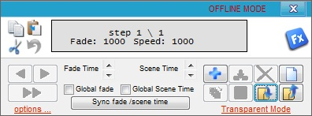
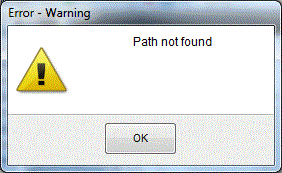
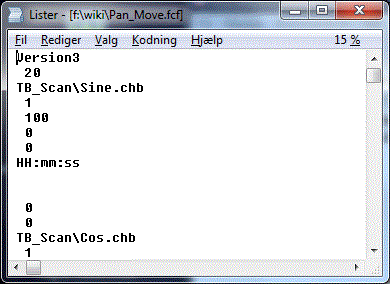
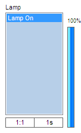
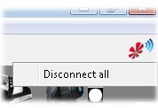

Table of Contents
Troubleshooting
Freestyler Features
As FreeStyler is a live program under continuous development there may from time to time be errors that look like a dead end.
The only way to track these errors down is to figure out what functionality is creating this error.
This is easy to say but can be difficult to track.
It may be something where all external controls are to be disabled, the location are deleted and created with new fixtures that are not the same as when the error occurred.
New installation of Freestyler.
And the error is still there.
There are a few more things to try.
FreeStyler has, as with many other programs, a way to reset all parameters.
In the freestyler.ini file in the “FreeStyler” folder there is a [ResetAll] parameter.
reset = false. Try change this to reset = true.
Restart FreeStyler.
And finally try to delete freestyler in the registration data base.
“\HKEY_CURRENT_USERS\Software\VB and VBA Program settings \Freestyler”
Be careful when you are in the registration database. You may destroy things you don’t want to destroy and then have to reinstall the whole PC again.
When FreeStyler crashes and it is due to user action like opening a panel, entering a parameter or so, it is quite easy to detect, replicate and raise a bug report.
If it is a crash that just appears by itself without any action from the user it is a bit more difficult to detect.
Here is a small test that may help to detect if it is the program or the driver that is failing.
Set the interface to “Virtual Interface” and start FreeStyler again.
When FreeStyler runs with “Virtual Interface” all functionality is the same and it is communicating with a software interface. If it doesn’t fail then the problem is related to the USB-DMX driver.
It will then be a good idea to check that the latest driver is installed, or reinstall the driver.
If it is a dongle based on the FTDI chipset then “Enttec” have a FTClean program that removes the driver:
http://www.enttec.com/dmx_usb/FTClean.zip
The latest driver can be found on FTDIchip's web site:
http://www.ftdichip.com/Drivers/D2XX.htm
NOTE: At the moment I am not aware of other drivers so if you have any knowledge of these please edit this note.
There have been some issues where FreeStyler has stopped sending DMX output.
It has been appearing in various shapes where also FreeStyler has crashed. Sometimes it has been sufficient just to close the program but the error comes again. Other times it has been impossible to close the program so it had to be ended via the job list. Other times it has even been necessary to force a power down of the PC to end the program.
One thing that we have detected is that disabling “USB selective suspend” removes this error.
This option will cut all communication to USB devices after some time to save power and is therefore to be disabled.
USB Selective suspend
If the password has been forgotten, there is only one way to fix it and that is in the registration data base.
It can be found in Windows under Start → Run → “RegEdit”
“\HKEY_CURRENT_USERS\Software\VB and VBA Program settings \Freestyler \Settings”
There is a “Password” label and you can see what the password is.
Groups
Functions
- This can happen because the Shutter CH isn't set correctly, so to solve this you have to set the Shutter CH correctly using the Fixture Creator.
Fixture Creator - Lamp Configuration
Strobe is stopped by using the Shutter “Open” or “Closed” Button.
Lamp Panel description
This indicates that no image is attached to this DMX value in the DMX tables.
See: Gobo Configuration. The description of Gobo wheel 3
When running Shape the blue ball doesn’t move. However, when monitoring the DMX output for Pan and Tilt it can be seen that these values change with the shape.
The update of the blue ball position was removed because of some error issues.
Flip should flip the fixture but keep the beam at the same point.
If the “Range” value is not defined or wrong then the beam will be moved after a flip.
See: Fixture Creator - Movement configuration
If “Use global colors” under “Setup” is checked on then the color palette is reduced to a few icons instead of a full color selection field.
See Fixture Creator section on this page.
Cues
When more cues are to run at the same time “Cue Multiselect always enable” is to be set on.
Link to multi cue.missing please enter when topic is made
Note “Cue Go to previous value always enable” - this restores the values when a cue is stopped.
Additionally, note that the sequences are to be made as Transparent (Transparent Mode).
Link to Seq .missing please enter when topic is made
Manual override on the fixtures has highest priority. This means that the override buttons don’t work if there is a manual override on the channel.
It is possible to change this by setting the overriding buttons to highest priority.
See Override buttons, Blue triangle
It is important to note that the shape movement is not a stand-alone movement generator.
Shapes have to be added in a sequence and then into the cue like everything else.
If the shape is not in a cue, it will be turned off when the new cue is started.
Link Add Shape on Sequence. Bezier Shape tutorial.
Sequences
The maximum number of scenes / steps in the sequencer was 15 in FreeStyler versions before 3.4.
From version 3.4 the maximum number of scenes / steps in the sequencer is 45.
The number can be changed in the file “freestyler.ini” which is in the freestyler folder.
[NumberOfScenes]
Number=45
See eventually: Editing the freestyler.ini file
You can also download the “FS configuration tool” Click here to Download the FS configuration tool
Disadvantages (please fill in if you know any):
The FreeStyler statup time will be longer.
When running with a time shorter than 400, the small color display on each fixture will not change.
This is intentional due to graphics handling on slow PCs.
Check that the Sequence is made in “Transparent Mode” with not use faders in “Off” mode.
If the “Cue” and “Sub Master” windows are open then there is no direct control over the fixture when you try to create a sequence.
The “Sequence Editor” will show “Offline” and all fixture control will only be visible in the 3D Easy view.
The reason for this is that it will then be possible to edit sequences during a show without disturbing the light running.

{kind=link}
If direct fixture control is wanted, close the “Sub Master” and “Cue” window.
When the sequence editor is opened, the first scene is already added by default.
If “+” is pressed, a new scene is added and if no changes are made after pressing “+” it will then be identical to the previous step.
Example:
1. Open sequence editor.
2. Make changes.
3. Press “+”
4. Make new changes.
5. Save the sequence.
The sequence now contain 2 steps with different scenes.
Most common error by beginners:
1. Open sequence editor.
2. Make changes.
3. Press “+”
4. Make new changes.
5. Press “+”
6. Save the sequence.
The sequence now contains 3 steps.
As no changes were made after pressing “+”, the two last steps are identical.
“+” adds a new scene empty scene.
If no changes are made it just adds an extra step in the sequence.
This is not necessarily an error as in some cases this effect may be wanted.
An example could be color where red is wanted for 1 step and yellow 9 steps.
There, 2 steps are with change and 8 are without.
Submasters
Trying to ”run” a cue in the submaster window and this message pops up.
The fcf file that is loaded into Submaster selection window contains the path to the cue that is selected. If the cue filename or path is renamed, moved or in any way manipulated then this message will pop up.
 
{kind=link}
{kind=link}
The fcf file has to be re-created or edited in a text editor to match the cue file.
Here the “TB_Scan\Sine.chb” has to be correct.
On the right of each sm is a slider. This is the sm intensity. For the most part you won't need it but any attribute like the 'lamp' that is set to use intensity will need this to be on. It works like a dimmer - the higher it is the brighter the beam. To use it, place the mouse cursor over it and hold the left mouse button. Now you can drag the intensity up and down. You will notice that it turns blue.

See Using Cues and Submasters
The SM fade has a option “Fader Start / Stop Control” found under the cog wheel in the Sub master panel.
This option switches off the sequences that are active on this Sub master fader when the fader is set to 0%.
If “Restore values” in the cue option is checked on and saved with the cue then when the Sub master fader is set to 0% the previous values for the channel are restored, which may give some unwanted effects.
DMX 400
The fixture must have a intensity channel or a RGB control to react on DMX400.
If a dimmer pack is used as fixture then check that the fixture has been created with an intensity channel and if not then create a new fixture with intensity control.
Missing windows
This can happen if you have dragged one of the windows to a second screen
You can reset all the windows: Go to Setup→Freestyler setup→Preferences→Extra options and press “Reset Window positions”
Or, under “Window”, select “Reset Window positions”
Freestyler Addons
No items
External Control
Midi Controll
-This can happen if the drivers are not installed, so go and install the drivers from the Midi controller.
-It can also be caused by the Midi output - this means you're using USB1.0. To solve this, get USB2.0 or turn off the Midi output.
For FreeStyler to recognize a button press it is important that the velocity from the Midi device and Freestyler match each other.
This can normally be alternated in the Midi device what velocity to send but it is also possible to change the trigger value in FreeStyler. In general it is preferable to do the velocity change in the Midi device because if it is done in FreeStyler it is a general change that affect all connected Midi devices.
Go to the Freestyler directory, now open Freestyler.ini with a note pad.
search for:
[Midi]
Triggervalue=127
Here you can change the Trigger value
Wireless remote control
It can be a bit difficult to figure out what goes wrong if FreeStyler and the wireless device fail to connect.
Mattotone has developed a small test tool which can help to figure out what is going wrong if they fail to connect.
This tool is named “FreeStyler_Remote_Connection_Test” FreeStyler Remote Connection Test
Occasionally Freestyler will block incoming connections, due to a previous connection not disconnecting cleanly (i.e. Wi-Fi dropout).
To resolve, right click on the connection icon and press “Disconnect all”

{kind=link}
Touchscreen UI2
Magic 3D Easy View & Scanlibrary
1)Be sure that you selected the right fixture in Magic 3D.
2)Did you select “Virtual interface” as your interface?
This can be caused by the resolution that 3DView works with. To change this, go to the Options then press “Resolution” and set it lower.
The fixtures in 3D Easy View are, as in FreeStyler, user created and so may have errors.
FreeStyler fixtures and 3D Easy view fixtures are not the same.
Try examining the fixture with “Scanlibrary Editor”
Fixture Creator
If only strobe is present in the Lamp panel then the panel will not be present in FreeStyler
There has to be either intensity or Shutter “Open” / “Closed” defined too.
It can be necessary to add a dummy function on one of the channels.
This error message appears when one or more DMX values are missing in the gobo tab.
If example “n’ gobos 1” is set to 3 then there are 3 gobos on the “Gobo 1” tab. These 3 gobos must have a value.
If they don’t have a DMX value then it is not possible to save the fixture.
If Gobo wheel 2 or 3 is defined then it is the same for them.
Check that all values are entered on the Gobo wheel tabs.
Fixture Creator - Gobo configuration
Sound To Light
No items
SunTriX & LedTriX plugins
From time to time this issue pops up.
One problem could be that the program does not support Unicode.
Go to “Control Panel” → “Region and Language” → tab “Administrative” →
In section “Language for non-Unicode programs” click “Change the system locale” and set “English (United Kingdom)” or US.
Or use this. https://github.com/xupefei/Locale-Emulator
DMX
DMX Fault finding
If a fixture reacts wrong on the fixture control fader then there may be an address overlap. DMX Addresses.
Asian languages use 2 bytes to represent a character, English just 1. Sending data to the com port will cause problems when value gets higher than 127.
Maybe this can help you out: http://markcz.wordpress.com/2009/07/10/multiple-language-for-non-unicode-programs-settings-on-one-computer/